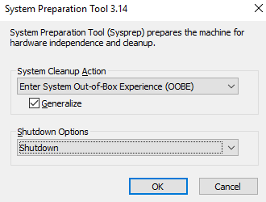

How to create a custom image from a VM on Azure Stack Hub using PowerShell
Overview
You can create an image resource from a generalised virtual machine (VM) that is stored as either a managed disk or an unmanaged disk in a storage account. You can then use the image to create multiple VMs.
This article explains how to create a custom image from a VM on Azure Stack Hub, which you can then use to deploy other VMs.
Prerequisites
To complete the steps in this article, you must have appropriate access to a subscription in the Azure Stack Hub portal.
Before you begin, ensure your PowerShell environment is set up as detailed in Configure the Azure Stack Hub user's PowerShell environment.
High-level Process Overview
Generalise the virtual machine.
Create a new resource group.
Important
The image must be created in the same resource group that you are planning to create the new virtual machine in.
In other words, we are creating a new resource group to contain the image and the new virtual machine.
Create a custom image from the virtual machine, ensuring that it is created in the new resource group.
Delete the virtual machine.
Deploy a second virtual machine from the image, which can only be created in the new resource group.
Delete the resource group which contained the original virtual machine.
Warning
The last step is only applicable if there are no other resources, such as other virtual machines, in the original resource group.
Generalise your VM
Warning
Once you've generalised a VM, you cannot log back into it.
Log in to your Windows VM using Remote Desktop Protocol (RDP).
Open a PowerShell console or command prompt as administrator and run the following command:
C:\Windows\System32\Sysprep\sysprep.exeIn the System Preparation Tool, from the System Cleanup Action list, select Enter System Out-of-Box Experience (OOBE).
Ensure the Generalise check box is selected.
From the Shutdown Options list, select Shutdown.
See the image below for an example:

Click OK and wait for the VM to shutdown. Your RDP session will be closed.
Tip
The generalisation process is complete once your VM is in a stopped state.
Creating the image
Warning
Capturing a VM image will make the VM unusable and cannot be undone.
Declare variables
Enter details below to provide values for the variables in the scripts in this article:
| Variable name | Variable description | Input |
|---|---|---|
| $ArmEndpoint | Azure Resource Manager endpoint for Azure Stack Hub | |
| $RGName | Name of the resource group | |
| $NewRGName | Name of the resource group for the virtual machine to be created within | |
| $VMName | Name of the virtual machine to be created | |
| $ImageName | Name of the new custom image to be created | |
| $NewVMName | Name of the new virtual machine to be created | |
| $Size | Size of the new virtual machine to be created | |
| $VNetName | Name of the virtual network to be created | |
| $SubnetName | Name of the subnet | |
| $NSGName | Name of the network security group to be created | |
| $PublicIPName | Name of the public IP to be created | |
| $Username | Username of the VM to be created | |
| $Password | Password of the VM to be created |
Run the following PowerShell code:
# Initialise environment and variables
# Declare endpoint
$ArmEndpoint = ""
# Add environment
Add-AzEnvironment -Name "AzureStackUser" -ArmEndpoint $ArmEndpoint
# Login
Connect-AzAccount -EnvironmentName "AzureStackUser"
# Get location of Azure Stack Hub
$Location = (Get-AzLocation).Location
# Declare variables
$VMName = ""
$RGName = ""
$ImageName = ""
# Declare variables to create a new VM from the image
$NewVMName = ""
$NewRGName = ""
$Size = ""
$VNetName = ""
$SubnetName = ""
$NSGName = ""
$PublicIPName = ""
$Username = ""
$Password = "" | ConvertTo-SecureString -Force -AsPlainText
$Credential = New-Object -TypeName System.Management.Automation.PSCredential -ArgumentList $Username, $Password
# Get VM details
$VM = Get-AzVM -Name $VMName -ResourceGroupName $RGName
if ($VM) {
# Stop the VM
Write-Output -InputObject "Stopping VM and marking as generalised..."
Stop-AzVM -Name $VMName -ResourceGroupName $RGName -Force
# Mark VM as Generalised
Set-AzVM -Name $VMName -ResourceGroupName $RGName -Generalized
}
else {
Write-Error -Message "VM with name: $VMName does not exist in resource group: $RGName."
break
}
# Create new resource group
New-AzResourceGroup -Name $NewRGName -Location $Location
# Create VM image
Write-Output -InputObject "Creating image of VM: $VMName."
$ImageConfig = New-AzImageConfig -Location $Location -SourceVirtualMachineId $VM.Id
$Image = New-AzImage -ResourceGroupName $NewRGName -ImageName $ImageName -Image $ImageConfig
# Delete the VM
Remove-AzVM -ResourceGroupName $RGName -Name $VMName -Force
# Get image to check OS type
$Image = Get-AzImage | Where-Object -FilterScript { $_.Name -like $ImageName }
# Depending on the OS type, open either an RDP or SSH port and provision correct size
# WARNING - These ports will be exposed to the internet. Edit the rules after creation to limit inbound traffic to known IP addresses
if ($Image.StorageProfile.OsDisk.OsType -like "Windows") {
$OpenPorts = 3389
if (-not $Size) {
$Size = "Standard_DS2_v2"
}
}
else {
$OpenPorts = 22
if (-not $Size) {
$Size = "Standard_DS1_v2"
}
}
# Create new VM from custom image
Write-Output -InputObject "Creating VM from image: $ImageName... (This may take a while)"
New-AzVM -ResourceGroupName $NewRGName -Location $Location -Name $NewVMName -ImageName $ImageName -Credential $Credential -VirtualNetworkName $VNetName -SubnetName $SubnetName -PublicIpAddressName $PublicIPName -SecurityGroupName $NsgName -OpenPorts $OpenPorts -Size $Size
# Remove source resource group
Remove-AzResourceGroup -ResourceGroupName $RGName -Location $Location -Confirm
Feedback
If you find a problem with this article, click Improve this Doc to make the change yourself or raise an issue in GitHub. If you have an idea for how we could improve any of our services, send an email to feedback@ukcloud.com.